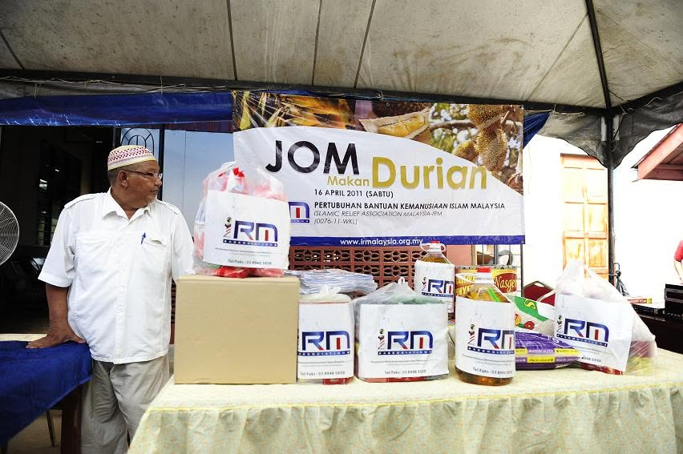
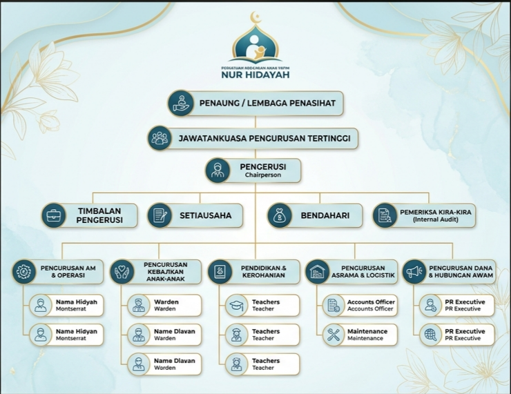

Our Mission & Vision
Every decision and programme at Nur Hidayah is guided by these core principles, rooted in the Islamic obligation to care for orphans.
Our Vision
To be a trusted, transparent and compassionate welfare home that raises orphaned and underprivileged children in Perak to become pious, educated, and self-reliant individuals who contribute positively to society.
Our Mission
o providing safe residential care, Islamic education, academic support and emotional nurturing to orphaned, destitute and underprivileged children in Changkat Jering, Perak sustained through the spirit of community generosity and sincere volunteerism.
Our Values
The principles of Amanah (trustworthiness), Ihsan (excellence in care), Ukhuwwah (brotherhood), Shura (consultation), and Tawadu' (humility) are the guiding principles of every caregiver and staff at Nur Hidayah.

From One Man's Compassion to a Home for Thirty-Three
In 2004, the late Abd Manaf Tahir saw orphaned and abandoned children in his community in Kampung Cheh, Bukit Gantang, who had no one to properly care for them. Moved by the Hadith of Prophet Muhammad ﷺ about the virtues of caring for orphans, he took on the responsibility voluntarily and without any external funds to open his home to these children.
Encouraged by family members and the goodwill of the surrounding villagers, the small informal shelter gradually grew. After the late Abd Manaf’s death, his son-in-law, Mohd Yussairie Mohd Saad who had served as secretary since 2006 took over as Chairman in 2018 and officially registered the organization as Persatuan Kebajikan Anak Yatim Nur Hidayah in 2014.
Today, Nur Hidayah cares for more than 33 children aged between 2 and 17 years old. Despite facing criticism, financial hardship, and the severe challenge of the COVID-19 pandemic, the home has persevered. Three of its former residents have gone on to pursue further studies at college-level institutions.
Key Milestones
More than two decades of dedication to the orphaned and underprivileged children of Perak.
2004 — Operations Begin
The late Abd Manaf Tahir opened his home in Kampung Cheh, Bukit Gantang, Perak to orphaned and abandoned children in the surrounding community, a voluntary and selfless act rooted in Islamic values.
2006 — Mohd Yussairie Joins
Mohd Yussairie Mohd Saad (son-in-law of the founder) begins serving as Secretary, supporting the administration and day-to-day running of the home alongside Allahyarham.
2014 — Formally Registered
The organization was officially registered as Persatuan Kebajikan Anak Yatim Nur Hidayah under the Registrar of Societies (ROS), Malaysia, a major step towards legitimacy and public trust.
2018 — New Leadership
Following the passing of the founder, Mohd Yussairie Mohd Saad assumes the role of Chairperson and takes full responsibility for the management and welfare of all residents at Nur Hidayah.
2018 — Joins PEYATIM
Nur Hidayah becomes an affiliated member of Persatuan Kebajikan Anak Yatim Malaysia (PEYATIM), a national-level umbrella body for orphanage welfare organisations. This affiliation provides additional credibility and allows donors to verify the home's legitimacy.
2020–2021 — COVID-19 Crisis
The pandemic caused severe financial and food shortages. Nur Hidayah, who was then home to 33 children, faced critical challenges until public support gradually increased through social media outreach and donations.
2024 — KESUMA'24 Visit
The Mahmudah Volunteer Club (KESUMA'24), led by advisor Azman Rasman, visited Nur Hidayah and donated essential food items, basic necessities and copies of the Quran as a meaningful form of community solidarity.
Today — Still Going Strong
Nur Hidayah continues to operate at Kampung Cheh, caring for over 33 children aged 2 to 17. Three former residents have proceeded to college. The home survives entirely on public generosity.
Our Objectives
Nur Hidayah's work is guided by the following clear organisational objectives.
| No. | Objective | Target Group | Expected Outcome |
|---|---|---|---|
| 1 | Provide safe and nurturing residential care | Orphans & underprivileged children aged 2–17 | A stable, loving home environment |
| 2 | Deliver Islamic education and moral guidance | All residents | Children grounded in faith and good character |
| 3 | Support formal schooling and academic achievement | All school-going residents | Children who keep up with peers and pursue higher education |
| 4 | Raise public awareness and obtain sustainable donations | General public, businesses and NGOs | Consistent funding to cover the RM 15,000/month operational cost |
| 5 | Develop life skills and social competencies | Older residents (13–17 years) | Independent, employable young adults on leaving the home |
| 6 | Maintain transparency and accountability | Donors, PEYATIM and government agencies | Public trust, proper record keeping and regulatory compliance |
Organisation Structure

| Position | Responsibility |
|---|---|
| Chairperson (Pengerusi) Mohd Yussairie Mohd Saad | Overall leadership, external relations, fundraising and public communications |
| Secretary (Setiausaha) | Administrative management, correspondence, official records and registration compliance |
| Treasurer (Bendahari) | Financial management, donation receipts, payment of utilities and salaries |
| Committee Members (AJK) | Programme planning, volunteer coordination and welfare monitoring |
| Caregivers (Pengasuh) | 24-hour direct care, meals, supervision and emotional support for all residents |
| Religious Educator (Ustaz/Ustazah) | Daily Quran recitation, Islamic studies, and moral guidance |
Recognition & Affiliations
Nur Hidayah is recognised by national welfare bodies and has received support from various community groups.
PEYATIM Member
Nur Hidayah is a registered affiliate of Persatuan Kebajikan Anak Yatim Malaysia (PEYATIM), the national umbrella body for orphanage welfare organisations. This allows donors to verify the home's authenticity through PEYATIM's official channels.
KESUMA'24 Community Support
In 2024, the Mahmudah Volunteer Club (KESUMA'24) visited Nur Hidayah under the leadership of advisor Azman Rasman, and donated food items including rice, cooking oil, sugar, flour, milk, bread and copies of the Quran along with cash donations collected from the public.
3 College-Level Alumni
Three former residents of Nur Hidayah have successfully continued their studies at college-level institutions, a proud testament to the house's commitment to education. They returned during the semester break, because Nur Hidayah is and will always be their home.